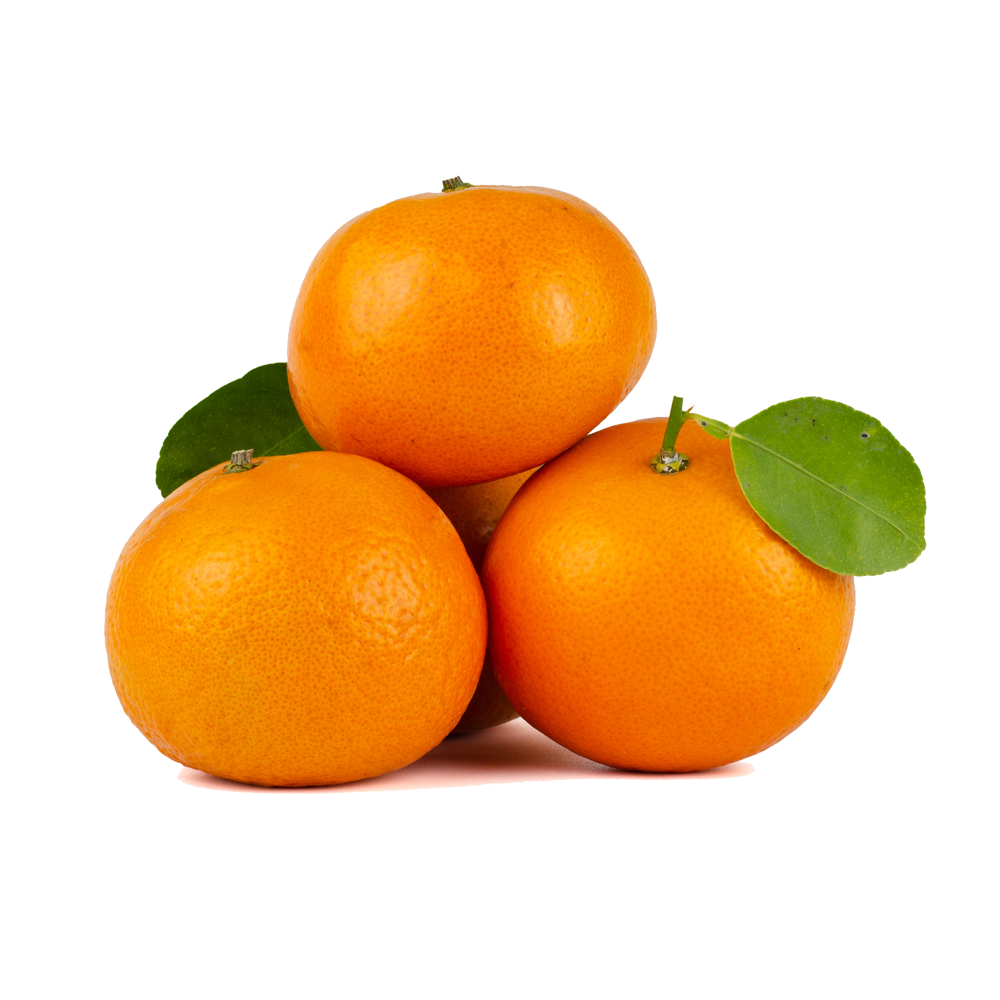

"¡Cosecha del Momento te permite descubrir el frescor de la naturaleza en cada clic! Explora nuestra página de frutas y verduras de temporada y déjate seducir por la explosión de colores y sabores que la Madre Naturaleza tiene para ofrecerte en cada estación. Desde las jugosas fresas primaverales hasta las crujientes manzanas otoñales, te llevamos en un viaje a través de los ciclos de la tierra para que disfrutes de la frescura y vitalidad de cada estación en tu mesa. ¡Bienvenido a un festín visual y culinario que cambiará la forma en que ves la comida!"
Cosas que podrás hacer en Cosecha del Momento:
- Filtrar una búsqueda a través del nombre
- Filtro específico de solo Verduras o Frutas
- Filtrar por comunidades autónomas
- Filtrar a través del calendario
